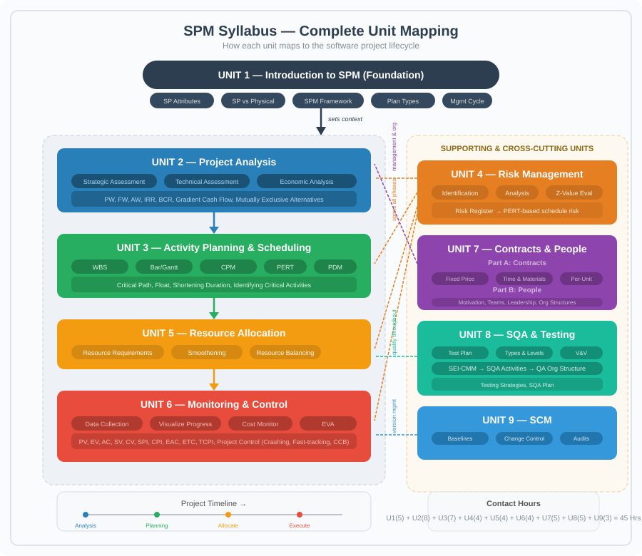
Software Engineering Problem
The core difficulty: software is invisible, highly complex, must conform to changing human rules, and is very easy to alter. These flow directly from the product's attributes.
Software Product Attributes → Problems
| Attribute | Meaning | Resulting Problem |
|---|---|---|
| Invisibility | Progress and structure cannot be seen. (e.g., you can’t “see” a code module’s completion % like you see a bridge pillar) | → Poor estimates, unrealistic deadlines. |
| Complexity | Thousands of interacting logic paths per unit cost. (e.g., even a small tax app has hundreds of rule combinations) | → Incomplete specs, role confusion, hard quality measurement. |
| Conformity | Must fit volatile human rules and laws. (e.g., payroll tax slabs change every budget year) | → Moving targets, incorrect success criteria. |
| Flexibility | Change is cheap and easy. (e.g., adding a “dark mode” toggle in a day) | → Scope creep, outdated docs, baseline instability. |
| Abstractness | Pure thought‑stuff; no physical existence. | → Miscommunication, knowledge loss when staff leave. |
| Intangibility of Process | Development knowledge lives in people’s minds. | → Poor training, remote management gaps. |
Project – A planned activity with:
Non-routine tasks, specific objectives, fixed time span, done for a client, multiple specialisms, phased execution, constrained resources, large/complex.
Short contrast:
Software Project
The whole lifecycle from early investigation to final implementation and maintenance, integrating all components (code, docs, training).
| Aspect | Physical Project (e.g., road bridge) | Software Project (e.g., hospital management system) |
|---|---|---|
| Visibility | Progress visible (pillars rising). | Progress invisible (code completion not tangible). |
| Complexity | Governed by fixed physical laws. | Much higher logical complexity; no natural bounds. |
| Conformity | Must follow stable building codes. | Must follow changing laws, insurance rules, etc. |
| Flexibility | Changes are expensive. | Changes are easy → frequent modifications. |
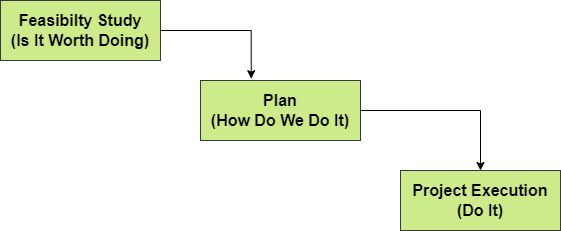
A. Feasibility Study – Use T‑O-E-S-L-i-P
Technical – hardware/software available?
Economical – benefits > costs?
Legal – data protection, licenses?
Operational – will users accept it?
Schedule – can it be done in time?
Short example: For a food delivery app, ask: can servers handle 10,000 orders? Will revenue recover development cost within 2 years?
B. Planning
Outline plan for the whole project; detailed plan only for immediate next stage.
Later stages planned when closer (rolling wave).
Short example: Phase‑1 (ordering) planned in detail now; Phase‑2 (loyalty points) detailed later, with better data.
C. Project Execution
Two sub‑phases:
A. Information Systems vs. Embedded Systems
| Information System | Embedded System |
|---|---|
| Interfaces with an organisation. | Interfaces with a machine. |
| Business logic focus. | Real‑time control focus. |
| Example: Payroll system, hotel reservation. | Example: Car anti‑lock braking software, AC temperature controller. |
B. Objectives‑Driven vs. Product‑Driven
| Objectives‑Driven | Product‑Driven |
|---|---|
| Aim is a goal. | Aim is a specified product. |
| Alternative solutions allowed. | Exact deliverable must be built. |
| Example: Brightmouth College – goal is cheaper payroll; if in‑house package isn’t cheaper, they can outsource. | Example: A custom passport‑issuing system with exact biometric specs. |
A. The 8 Management Activities (SPM Framework)
| Activity | Meaning (short illustration) |
|---|---|
| Planning | Decide what to do (e.g., create sprint schedule) |
| Organising | Make arrangements (e.g., book test environment) |
| Staffing | Select right people (e.g., hire a UI designer) |
| Directing | Lead and instruct (e.g., explain module requirements to a junior dev) |
| Monitoring | Check progress (e.g., daily stand‑up) |
| Controlling | Correct deviations (e.g., add devs to a delayed module) |
| Innovating | Find new solutions (e.g., use a new caching library to fix performance) |
| Representing | Liaise with clients/management (e.g., present status to steering committee) |
B. Project Control Cycle
text
Real World (actual work) → Data collection → Data Processing (information) → Modelling → Decisions/Plans → Implementation → (back to Real World)
Simple memory: Measure → Compare → Decide → Act → Repeat.
Short example: Collect sprint hours, see delay, move one feature to next sprint, implement decision, remeasure.
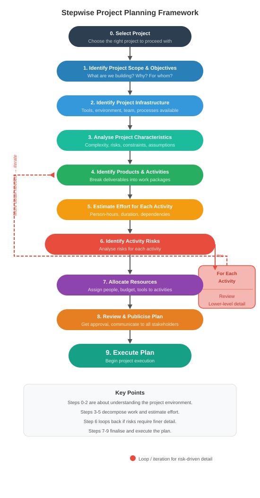
| Plan Type | Description (short example in parentheses) |
|---|---|
| Quality Plan | Quality standards, reviews, tests (e.g., 95% unit test coverage required) |
| Validation Plan | Approach for testing and acceptance (e.g., UAT in March with real hospital staff) |
| Configuration Management Plan | Version control, change control (e.g., Git for code; signed form to change requirements) |
| Maintenance Plan | Post‑delivery effort & cost (e.g., 2 devs for 6 months to handle tax updates) |
| Staff Development Plan | Team skill improvement (e.g., junior devs attend a cloud workshop) |
Project analysis is the process of examining every aspect of a proposed project before committing resources. It answers one core question: "Is this project worth doing?"
It sits inside the Feasibility Study (from Unit 1) and breaks down into three assessments:
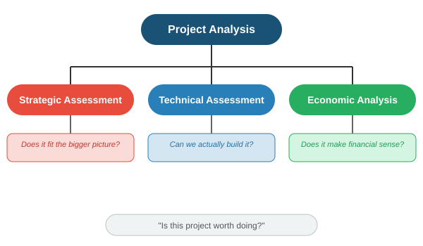
Strategic assessment evaluates whether the project aligns with the organisation's long-term goals. A project can be technically brilliant and financially profitable, but still wrong for the company.
Key Questions:
Link from old notes (the bit that fits here):
Simple example: A small college wants to build an AI-powered student counselling chatbot. Technically possible, financially cheap, but strategically misaligned — their real priority is fixing the broken enrolment system. Project fails strategic assessment.
Technical assessment asks: "Do we have the capability to build and run this system?"
Areas assessed:
| Area | Key Question | Risk if Not Checked |
|---|---|---|
| Hardware | Are servers, network, devices available? | System cannot be deployed. |
| Software | Do we have the required development tools, databases, licenses? | Development stalls. |
| Skills | Does the team have the right expertise? | Poor quality product. |
| Infrastructure | Does the existing IT environment support the new system? | Integration failure. |
| Operational fit | Will the organisation be able to use and maintain it? | System goes unused. |
Simple example: A project to build a mobile banking app fails technical assessment because the bank's legacy mainframe cannot expose APIs that the app needs to consume.
Link from old notes: Step 2.2 "Identify installation standards and procedures" → ensures technical standards are followed. Step 3.5 "Select general lifecycle approach" → technical constraints may dictate waterfall vs agile.
This is the financial mathematics part. Every method here compares cash inflows (benefits) vs cash outflows (costs) over time, accounting for the time value of money.
Core concept: Money today is worth more than money tomorrow (because today's money can earn interest).
Glossary of symbols you'll use throughout:
| Symbol | Meaning |
|---|---|
| P | Present worth (value at time = 0) |
| F | Future worth (value at time = n) |
| A | Annual worth (equal amount recurring each period) |
| G | Uniform gradient (amount increasing by constant G each period) |
| i | Interest rate per period (decimal form, e.g., 10% = 0.10) |
| n | Number of periods (usually years) |
Concept: Convert all future cash flows (inflows and outflows) to their equivalent value right now (time zero). The sum is the Net Present Worth (NPW) or Net Present Value (NPV).
Formula:
Decision Rule:
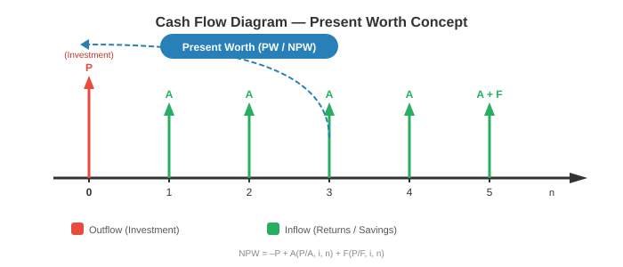
Simple example: Invest Rs 1,00,000 now (P). Get Rs 40,000 per year for 3 years (A). Interest rate 10%.
Concept: Convert all cash flows to their equivalent value at the end of the project's life (time n). Then compare.
Formula:
Decision Rule:
Simple example: Same project as above. Find F worth of the Rs 1,00,000 investment after 3 years at 10%.
Concept: Spread all cash flows (lumpy investments and returns) into an equivalent equal annual amount over the project life. This makes comparison easy, especially for projects with different lifetimes.
Formula:
Decision Rule:
Simple example: A machine costs Rs 5,00,000 today (P), lasts 5 years, has annual maintenance cost of Rs 20,000. Interest 12%.
Annual cost of initial investment = 5,00,000 × [ (0.12 × 1.12⁵) / (1.12⁵ – 1) ] = 5,00,000 × 0.2774 = Rs 1,38,700
Total annual cost = 1,38,700 + 20,000 = Rs 1,58,700 per year.
This is the uniform annual cost of owning and operating the machine.
Concept: The IRR is the discount rate (i) at which the Net Present Worth becomes exactly zero. It represents the project's actual rate of return.
Formula (conceptual):
Solve for i where:
This usually requires trial-and-error or interpolation:
Where: i₁ = lower rate giving positive NPW; i₂ = higher rate giving negative NPW.
Decision Rule:
Simple example: Invest Rs 10,000 now. Get Rs 12,000 after 2 years.
Concept: Ratio of all discounted benefits to all discounted costs.
Formula:
Or equivalently:
Decision Rule:
Simple example: A road project costs Rs 50 crore today. Benefits over 10 years have a PW of Rs 70 crore.
Concept: Not all recurring cash flows are equal. Some increase or decrease by a constant amount (G) each period. For example, maintenance costs that rise by Rs 5,000 every year.
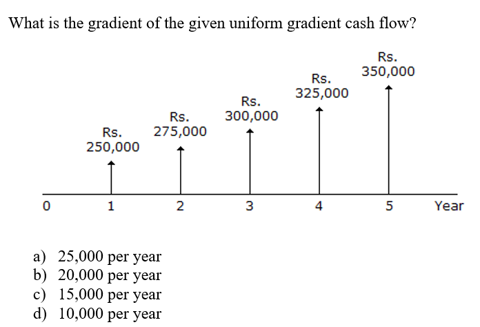
Conversion formulas (gradient to present, then to annual):
Decision Use: Use these formulas to convert a gradient series into an equivalent P or A, then plug into the PW, AW, or BCR method as needed.
Simple example: Maintenance cost is Rs 10,000 in Year 1, increasing by Rs 2,000 each year for 5 years (G = 2,000). Interest = 10%.
When you must choose only one from several options (e.g., selecting one vendor, one machine, one location), you compare them on equal footing.
Key principle: Compare using the same method and the same time horizon.
Methods for comparison (in order of reliability):
| Method | How to Apply | Watch Out For |
|---|---|---|
| Net PW | Compute NPW for each alternative. Choose the one with highest positive NPW. | Must use same number of periods. If lives differ, use least common multiple (LCM) or AW instead. |
| Annual Worth | Compute AW for each alternative. Choose the one with best AW (highest for benefits, lowest for costs). | This is the cleanest method when alternatives have different lives — no need for LCM. |
| IRR | Compute IRR for each. The one with highest IRR may not be the best NPW choice. Use Incremental IRR analysis: compare the difference between two projects. | Never rank by IRR alone. Always do incremental analysis. |
| BCR | Compute BCR for each. Higher is better, but scale matters. | A tiny project can have a huge BCR but tiny absolute benefit. Use alongside NPW. |
Step-by-step: Incremental IRR (when two projects have different IRRs)
Simple example: Two machines, MARR = 10%.
| Year | Project |
|---|---|
| 0 | -50000 |
| 1 | 20000 |
| 2 | 5000 |
| 3 | 10000 |
| 4 | 25000 |
| 5 | 30000 |
| Activity | Duration (days) | Precedence | Cost/day (Rs.) |
|---|---|---|---|
| ---------- | ---------------- | ------------ | ---------------- |
| A | 6 | - | 100 |
| B | 6 | A | 100 |
| C | 8 | B | 200 |
| D | 4 | B | 300 |
Progress after end of 16th day:
| Activity | % Completion | Incurred Cost |
|---|---|---|
| ---------- | ------------- | --------------- |
| A | 100 | 800 |
| B | 100 | 400 |
| C | 25 | 500 |
| D | 50 | 400 |
Calculate SV, SPI, CV and CPI respectively.
| Year | Project |
|---|---|
| 0 | –200,000 |
| 1 | 100,000 |
| 2 | 50,000 |
| 3 | 50,000 |
| 4 | 100,000 |
| 5 | 50,000 |
| Year | Project A | Project B |
|---|---|---|
| ------ | ----------- | ----------- |
| 0 | -40,000 | -80,000 |
| 1 | 5,000 | 2,000 |
| 2 | 15,000 | 10,000 |
| 3 | 5,000 | 70,000 |
| 4 | 40,000 | 50,000 |
| 5 | 50,000 | 50,000 |
| Year | Project |
|---|---|
| 0 | -50000 |
| 1 | 5,000 |
| 2 | 5,000 |
| 3 | 20,000 |
| 4 | 40,000 |
| 5 | 50,000 |
Activity planning tells you what to do, when to do it, and in what order. The main objectives are:
| Objective | What it means | Simple example |
|---|---|---|
| Feasibility assessment | Is the project possible within the given time and resource limits? | Can we deliver the library management system before the new academic session? |
| Resource allocation | What resources (people, equipment) are needed and when? | Need two Java developers in Phase 2, not from day one. |
| Detailed costing | How much will the project cost, and when will we spend the money? | Pay licences in Month 1, pay testers in Month 4. |
| Motivation | Clear targets with deadlines motivate the team, especially if they helped set those targets. | Developer commits to finishing the login module by Friday. |
| Co-ordination | When do different teams or departments need to be available and when can they leave? | Database team needed from Week 2 to Week 5; then they move to another project. |
Key idea: Planning is not a one-time event. It is an ongoing process — you refine the plan as you get more information.
Definition: A hierarchical decomposition of the entire project scope into smaller, manageable pieces. The lowest level is called a work package — small enough to assign to a single person or small team.
Structure (IBM’s 5-level approach, from old notes):
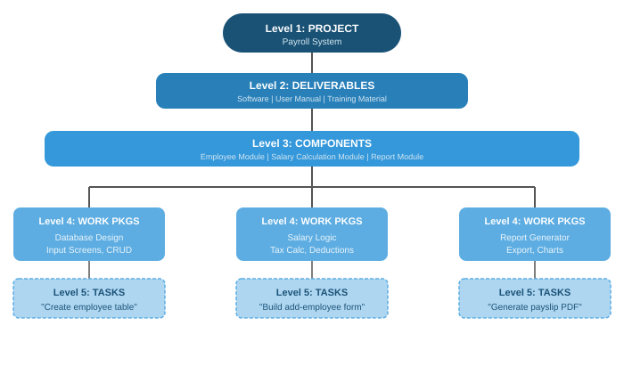
Simple example – Payroll Project:
Why WBS is essential:
Note: Activity planning can also start from a Product Breakdown Structure (PBS) and Product Flow Diagram (PFD), but WBS is the most common and the one your syllabus explicitly names. Think of WBS as the skeleton of your plan.
A bar chart is a simple visual schedule. Activities are listed down the left, a time scale runs across the top, and horizontal bars show the start and end of each activity.
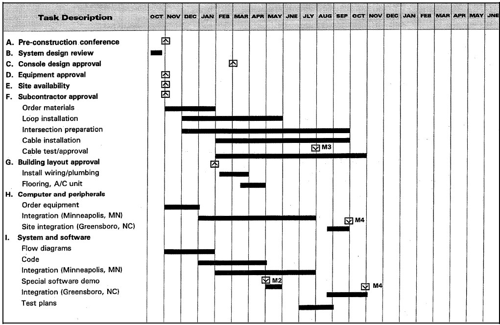
text
Activity | Week 1 | Week 2 | Week 3 | Week 4 | Week 5 |
---------------|--------|--------|--------|--------|--------|
A: Requirements|████████| | | | |
B: Design | |████████| | | |
C: Coding | | |████████|████ | |
D: Testing | | | | ██████|████ |
Advantages:
Limitations:
That is why we move to network models.
Network models represent activities and their dependencies as a graph. They allow us to calculate timings and find the critical path.
The three models you must know:
| Model | Key Characteristic |
|---|---|
| CPM (Critical Path Method) | Deterministic – activity durations are known, single values. |
| PERT (Program Evaluation & Review Technique) | Probabilistic – activity durations are uncertain, use three time estimates. |
| PDM (Precedence Diagramming Method) | Uses nodes for activities and allows four types of dependencies with lags. |
When to use: Routine projects where activity times are known from past experience.
Key terms for each activity:
| Symbol | Meaning | Obtained by |
|---|---|---|
| ES | Earliest Start | Forward Pass |
| EF | Earliest Finish | ES + Duration |
| LS | Latest Start | Backward Pass |
| LF | Latest Finish | LS + Duration |
| Float (Slack) | Amount of delay allowed without delaying the project | LS - ES (or LF - EF) |
| Critical Path | The path through the network where Float = 0 for all activities | After forward & backward pass |
Steps to apply CPM:
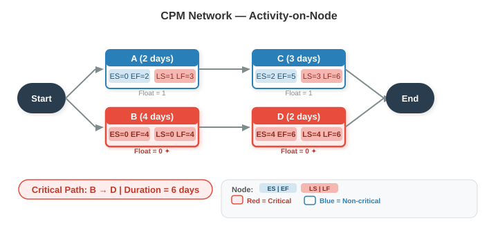
text
[A] [C]
(2 days) (3 days)
/ \
Start -- >-- End
\ /
[B] [D]
(4 days) (2 days)
Precedence: A must finish before C; B must finish before D; C and D finish the project.
Example Calculation:
Activity durations: A=2, B=4, C=3, D=2.
When to use: Projects with uncertainty, where activity durations are hard to predict (e.g., R&D projects).
Three time estimates per activity:
| Estimate | Symbol | Meaning |
|---|---|---|
| Optimistic | O | Best-case scenario, everything goes right. |
| Most Likely | M | Normal conditions, most realistic. |
| Pessimistic | P | Worst-case scenario, everything goes wrong. |
Formulas:
Project duration and probability:
Look up Z in the standard normal distribution table. A Z=1.0 means ~84% probability; Z=0 means 50%.
Simple example: Activity X: O=3, M=5, P=13
Exam tip: CPM is deterministic (single duration), PERT is probabilistic (three estimates). Use CPM when past data exists, PERT when there is high uncertainty.
PDM is a more flexible network model used by modern scheduling software (e.g., MS Project). It uses Activity-on-Node representation and allows four types of dependencies (relationships) with lags.
Four Dependency Types:
| Type | Abbreviation | Meaning | Example |
|---|---|---|---|
| Finish-to-Start | FS | Successor cannot start until predecessor finishes (standard CPM relationship). | Testing (B) cannot start until coding (A) finishes. |
| Start-to-Start | SS | Successor cannot start until predecessor has started (with possible lag). | Design documentation (B) can start 2 days after design (A) has started. |
| Finish-to-Finish | FF | Successor cannot finish until predecessor finishes (with possible lag). | System integration (B) cannot finish until module testing (A) finishes + 1 day for final checks. |
| Start-to-Finish | SF | Successor cannot finish until predecessor starts (rare). | Security guard duty (B) cannot finish until night shift (A) starts. |
Lags: A positive or negative time offset applied to a dependency.
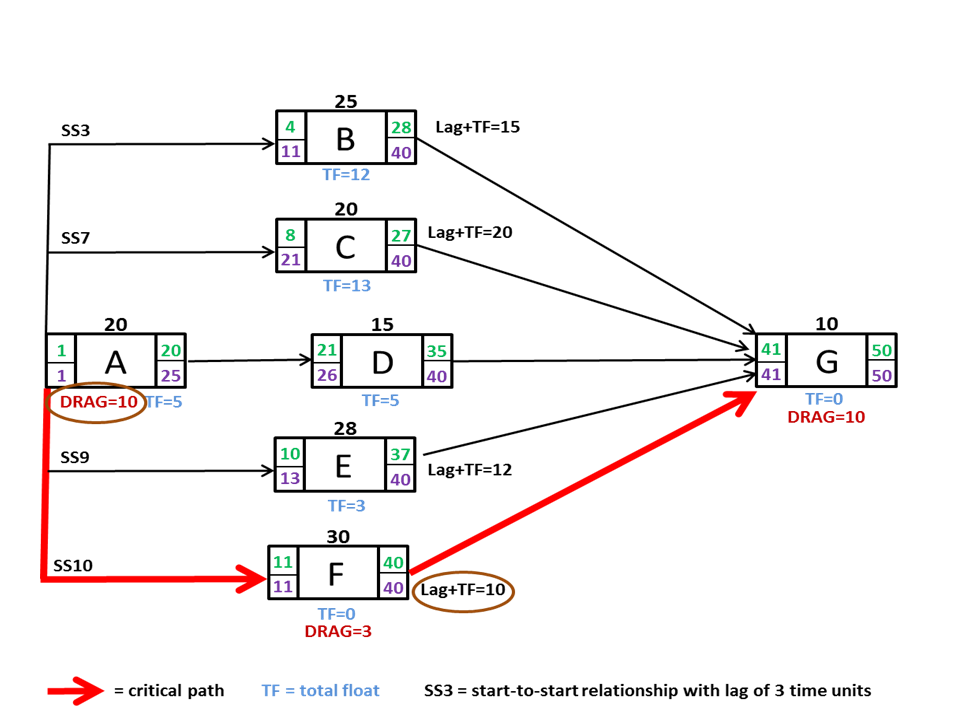
text
[A: Design] ----(SS + 2 days)----> [B: Write User Manual]
Meaning: B (manual writing) can start 2 days after A (design) has started.
Why PDM is important:
Critical activities are those that directly affect the project end date. Any delay in a critical activity delays the whole project.
How to identify:
From the CPM example earlier:
Why this matters:
When the calculated project end date is too late, you must compress the schedule. Two main methods:
A. Crashing
Simple example: A critical coding activity takes 10 days with 1 developer. Adding a second developer might reduce it to 6 days, but at extra cost.
B. Fast-Tracking
Simple example: Start testing modules while the remaining modules are still being coded, instead of waiting for all coding to finish.
General process:
| Activity | Duration (Week) | Precedence |
|---|---|---|
| ---------- | ---------------- | ------------ |
| A | 1 | – |
| B | 2 | A |
| C | 5 | A |
| D | 2 | – |
| E | 4 | C, D |
| F | 3 | – |
| G | 4 | B, E, F |
| Activity | Duration (weeks) | Precedence |
|---|---|---|
| ---------- | ----------------- | ------------ |
| A | 2 | - |
| B | 2 | - |
| C | 4 | A |
| D | 2 | B |
| E | 4 | B, D |
| Activity | Duration (weeks) | Precedence |
|---|---|---|
| ---------- | ----------------- | ------------ |
| A | 4 | - |
| B | 4 | A |
| C | 2 | A |
| D | 6 | B, C |
| Activity | Duration (Weeks) | Precedence |
|---|---|---|
| ---------- | ----------------- | ------------ |
| A | 5 | - |
| B | 3 | A |
| C | 5 | A |
| D | 10 | B, C |
Risk – The possibility that something will happen that harms the project’s objectives (time, cost, quality).
Risk Management – A systematic process of identifying, analysing, and controlling risks before they become problems.
It answers three core questions:
Understanding the nature of risk helps you categorise and respond to it correctly.
| Aspect | Explanation | Simple Example |
|---|---|---|
| Risk vs. Uncertainty | Risk = you can predict probability and impact. Uncertainty = you cannot even guess. | Risk: 30% chance a key developer leaves (known event). Uncertainty: a new technology might appear next year and make your project obsolete. |
| Negative vs. Positive Risk | Most risks are threats (negative). Some are opportunities (positive). | Threat: server delivery delayed. Opportunity: a new tool could reduce testing time. |
| Known vs. Unknown Risks | Known = identified in advance. Unknown = emerge unexpectedly. | Known: integration bugs. Unknown: sudden regulatory change. |
| Business vs. Project Risk | Business: risk to the organisation’s benefit. Project: risk to project delivery. | Business: product may not sell. Project: missing a deadline. |
| Common Software Project Risks | High-level categories: personnel, technology, requirements, estimation, organisational. | New tech stack causing delays, client keeps changing requirements. |
This is the first practical step: find as many potential risks as possible.
Common Identification Techniques:
| Technique | How It Works | Simple Example |
|---|---|---|
| Brainstorming | Team generates risks freely, no criticism. | Team lists everything that could go wrong with the new payroll system. |
| Checklists | Use a standard list of common software project risks. | Checklist item: "Are requirements stable?" |
| Interviews | Talk to experts, stakeholders, and experienced project managers. | Ask a senior architect about technical risks. |
| SWOT Analysis | Identify Strengths, Weaknesses, Opportunities, Threats. | Weakness: team inexperienced with cloud tech → risk. |
| Assumption Analysis | List all project assumptions and check what happens if they are wrong. | Assumption: third-party API will be ready by March. If not → delay. |
| Diagramming | Cause-and-effect (fishbone) diagrams to trace root causes. | Effect: project late. Causes: unclear specs, sick developer, slow hardware. |
Risk Register (Output of Identification)
A document listing every identified risk, its description, probability, impact, owner, and planned response. It is a living document updated throughout the project.
Simple example entry:
text
Risk ID: R01
Description: Lead developer may leave in the middle of coding.
Probability: Medium
Impact: High
Owner: Project Manager
Response: Cross-train another developer; maintain documentation.
After identification, we analyse each risk to prioritise it: Probability × Impact.
A. Qualitative Risk Analysis
Subjective, quick, uses descriptive scales.
| Probability Scale | Impact Scale |
|---|---|
| Low – Medium – High | Low – Medium – High |
| Very Low, Low, Moderate, High, Very High (1-5) | Same levels |
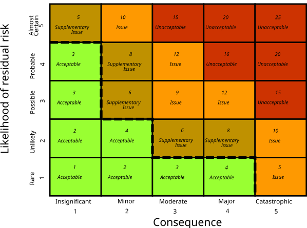
text
Impact
Low Medium High
Probability
High Medium High Critical
Medium Low Medium High
Low Very Low Low Medium
B. Quantitative Risk Analysis
Uses numbers. Tools include:
This is a quantitative technique to answer: "What is the probability that the project will miss its target deadline?"
It comes directly from the PERT method (Unit 3). Instead of just one deterministic schedule, PERT gives us the project’s expected time (TE) and its variance. We can then use the Z-value to find the probability of finishing by any given deadline.
Step-by-Step Process:
For each activity on the critical path, have the three PERT estimates: Optimistic (O), Most Likely (M), Pessimistic (P).
Calculate Expected Time (TE) and Variance (σ²) for each critical activity:
Calculate the Project TE = sum of TE of all critical activities.
Calculate the Project Variance = sum of σ² of all critical activities.
Compute the Project Standard Deviation = √(Project Variance).
For a target deadline T, calculate the Z-value:
Interpret Z using the standard normal distribution table (or remember key thresholds):
Simple Example:
A project has only two critical activities with the following estimates:
| Activity | O | M | P | TE | σ² |
|---|---|---|---|---|---|
| A | 5 | 10 | 15 | 10 | ((15-5)/6)² = (10/6)² ≈ 2.78 |
| B | 8 | 12 | 22 | 13 | ((22-8)/6)² = (14/6)² ≈ 5.44 |
The client demands completion in 25 days. What is the risk of exceeding 25 days?
text
Z = (25 - 23) / 2.87 ≈ 0.70
From normal table, Z=0.70 → ~75.8% probability of finishing on or before 25 days.
So the risk of exceeding 25 days = 100% – 75.8% ≈ 24.2%.
If the target was 20 days:
text
Z = (20 - 23) / 2.87 ≈ -1.04 → ~15% probability of meeting deadline, 85% risk of delay.
Why This Matters for Risk Management:
Exam Tip: The Z-value method is the bridge between Unit 3 (PERT) and Unit 4 (Risk). You will likely have a numerical problem linking both
Before you can allocate resources, you must identify what you need, when, and at what level.
What is a Resource?
Anything required to carry out project activities:
How to Identify Resource Requirements (Per Activity)
For each activity in the WBS, specify:
| Attribute | Meaning | Simple Example |
|---|---|---|
| Work amount | How much work (person-days, units) | 5 person-days to code login module |
| Skill/experience level | Minimum capability needed | Mid-level Java developer |
| Complexity | How difficult the task is (scale 1-5) | Complexity: 3 |
| Task category | Unskilled / Skilled / Expert / Leadership / Management | Category: Skilled |
| Timing | When the resource is needed (driven by activity ES/LS dates) | Needed in Week 3-4 |
Who Does This?
The Project Manager is responsible. Priority is given to resources that are scarce or hard to find (e.g., senior developers) — these must be planned far in advance.
Resource allocation is the process of assigning identified resources to project activities in a way that respects both activity dependencies and resource constraints.
Key Inputs:
Key Outputs (Three Schedules):
| Schedule | Contents |
|---|---|
| Activity Schedule | Planned start and finish date for each activity |
| Resource Schedule | Dates on which each resource is needed, and at what level |
| Cost Schedule | Planned cumulative expenditure over time |
Prioritisation Techniques (Which activity gets the resource first?)
When resources are limited, you must decide which activity gets priority.
A. Total Float Priority
B. Ordered List Priority (Burman's Priority List)
Important Consideration: Resource Allocation Can Change the Critical Path
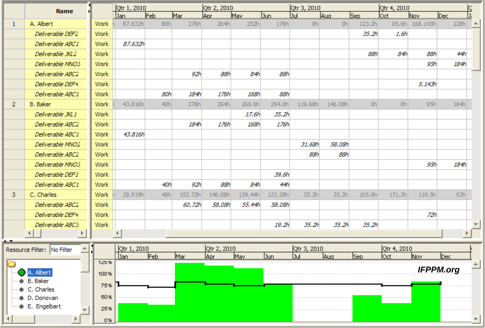
text
People
|
5 | ████████
4 | ████ ████
3 | ████ ████
2 |███ ████
1 | ██
|____________________________________ Week
1 2 3 4 5 6 7
A resource histogram shows how many people (or units of a resource) are needed each week. White bars = scheduled work; shaded bars = float period.
Definition: Adjusting the start dates of non-critical activities (within their float) to reduce peaks and troughs in resource demand — without changing the project end date.
Goal: Achieve a more even, predictable resource usage profile.
What you do:
Simple Example:
text
Before smoothening: After smoothening:
Week 2: 3 devs (peak) Week 2: 2 devs
Week 3: 1 dev Week 3: 2 devs
Week 4: 1 dev Week 4: 2 devs
Activity B has 2 weeks of float. It was scheduled in Week 2, but we delay it to Week 3. The peak drops from 3 to 2.
Key Points:
Definition: When resource supply is strictly limited, you may need to delay activities beyond their float to stay within the resource limit. This can extend the project end date.
Goal: Ensure resource demand never exceeds available supply.
What you do:
Simple Example:
text
Available: 2 Java developers maximum.
Week 3 demand: Activity P needs 1 dev, Activity Q needs 1 dev, Activity R needs 1 dev → 3 devs required.
Activity R has zero float (critical). You must delay one activity beyond its float.
Result: Project end date shifts by the delay.
Resource Smoothing vs. Resource Balancing
| Aspect | Resource Smoothing | Resource Balancing |
|---|---|---|
| Uses float | Yes, only within available float | No, may exceed float |
| Project end date | Unchanged | May be extended |
| Constraint | Flatten resource usage | Hard limit on resource availability |
| Priority | Aesthetic/efficiency | Feasibility — must stay within resource cap |
| When to use | Resources flexible, want stability | Resources fixed, project must fit them |
Human Resource Scheduling Issues
When scheduling people, account for:
Resource Allocation Principles (Being Specific)
Cost Categories
Once the project is underway, the focus shifts from planning to ensuring progress.
Monitoring and control is a continuous cycle:

Simpler memory: Measure → Compare → Decide → Act → Repeat.
Purpose:
Checkpoints: Essential to set review points in the activity plan.
Good control needs reliable, timely data.
What to collect:
How to collect:
| Method | Description | Simple Example |
|---|---|---|
| Weekly time sheets | Staff record hours spent on each activity. | Developer logs 8 hours on module coding. |
| Progress meetings | Short, regular team meetings (e.g., Monday morning) to review what was done and what's next. | Each member reports: "Login module coding done, testing module starting." |
| Partial completion reporting | For long tasks, break into measurable sub-products and count completed items. | Number of screen layouts finished out of total 20. |
| Traffic Light (RAG) reporting | Instead of guessing % complete, team members give a colour status. | Green: on target. Amber: delayed but recoverable. Red: seriously off track, needs help. |
Traffic Light Method Steps:
Why use Traffic Light? It avoids the false precision of "90% complete" and highlights problems early.
Priority for Monitoring: You cannot monitor everything equally. Prioritise:
Raw data is hard to interpret. Visual tools make progress clear.
A. Gantt Chart (Updated)
B. Slip Chart
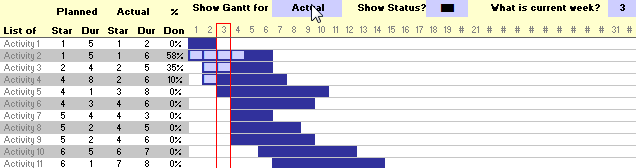
text
Activity A: Planned |████████████|
Actual |██████████████░░░░| (slipped by 2 weeks)
C. Ball Chart
Simple example:
text
Circle for "Design" shows: "10 Mar / 15 Mar" (original / revised target)
Once completed, it shows: "10 Mar / 17 Mar" (original / actual)
Tracking what you are spending versus what you planned to spend.
Components of cost:
Approach:
Cost monitoring is not enough alone: You could be under budget but behind schedule. That is why we need Earned Value Analysis.
EVA integrates scope, schedule, and cost into a single monitoring system. It tells you not just "how much did I spend?" but "how much value did I get for that spend?"
Core Three Metrics:
| Metric | Full Name | Meaning | Simple Analogy |
|---|---|---|---|
| PV | Planned Value | The budgeted cost of work that was planned to be done by now. | The road should have been 10 km by today (costing Rs 10 lakh). |
| EV | Earned Value | The budgeted cost of work actually completed by now. | The road is only 8 km, so value earned = 8 lakh. |
| AC | Actual Cost | The money actually spent to achieve the completed work. | You spent Rs 12 lakh to build that 8 km. |
Derived Variances and Indices:
| Metric | Formula | Meaning | Interpretation |
|---|---|---|---|
| SV (Schedule Variance) | EV - PV | Are we ahead or behind schedule? | + good, – bad |
| CV (Cost Variance) | EV - AC | Are we under or over budget? | + good, – bad |
| SPI (Schedule Performance Index) | EV / PV | Schedule efficiency. | >1 ahead, <1 behind |
| CPI (Cost Performance Index) | EV / AC | Cost efficiency. | >1 under budget, <1 over |
Simple Example:
Forecasting with EVA:
| Forecast | Formula | Meaning |
|---|---|---|
| EAC (Estimate at Completion) | BAC / CPI | What will the total project cost if current cost performance continues? |
| ETC (Estimate to Complete) | EAC - AC | How much more money will be needed? |
| TCPI (To-Complete Performance Index) | (BAC - EV) / (BAC - AC) | What CPI must we achieve on remaining work to stay within budget? |
Where BAC = Budget at Completion (original total budget).
Continuing the example: BAC = 4,00,000
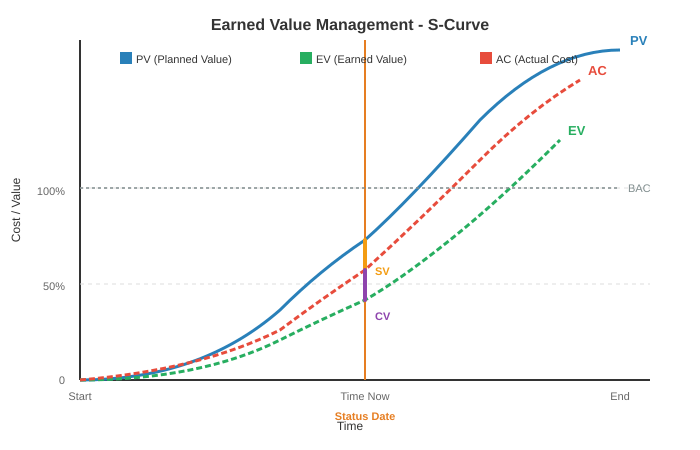
Why EVA is Powerful:
Once monitoring reveals a deviation, control action is taken to bring the project back on target.
A. Shortening the Critical Path
If the project is behind schedule, focus on critical activities (non-critical ones have float).
B. Reconsider the Precedence Network
C. Change Control
When requests for change come (and they will), a formal process prevents chaos.
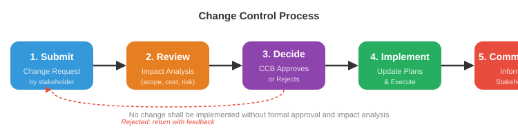
Key Principle: No change should be implemented without formal approval and impact analysis.
| Activity | Duration (days) | Precedence | Cost/day (Rs.) | Total Cost |
|---|---|---|---|---|
| ---------- | ---------------- | ------------ | ---------------- | ------------ |
| A | 5 | - | 200 | 1000 |
| B | 5 | A | 200 | 1000 |
| C | 10 | A | 100 | 1000 |
| D | 5 | A, B | 200 | 1000 |
Progress after end of 10th day:
| Activity | % Completion | Incurred Cost |
|---|---|---|
| ---------- | ------------- | --------------- |
| A | 100 | 1200 |
| B | 100 | 800 |
| C | 40 | 800 |
| D | 0 | 0 |
Calculate SV, SPI, CV and CPI respectively.
| Activity | Duration (days) | Precedence | Cost/day (Rs.) |
|---|---|---|---|
| ---------- | ---------------- | ------------ | ---------------- |
| A | 8 | - | 200 |
| B | 4 | - | 200 |
| C | 4 | A, B | 300 |
| D | 4 | B | 400 |
Progress after end of 12th day:
| Activity | % Completion | Incurred Cost |
|---|---|---|
| ---------- | ------------- | --------------- |
| A | 100 | 1400 |
| B | 100 | 400 |
| C | 75 | 1000 |
| D | 50 | 1000 |
Calculate SV, SPI, CV, and CPI respectively.
Projects often acquire software from external suppliers. The software could be:
A contract legally binds both parties. The project manager must ensure the contract reflects the true requirements and expectations.
| Contract Type | Meaning | Advantages for Customer | Disadvantages |
|---|---|---|---|
| Fixed Price | A single agreed price for the whole job. | Known expenditure; supplier motivated to be cost‑effective. | Supplier builds in contingency → price may be higher; difficult to change requirements; threat to quality. |
| Time and Materials | Customer pays for actual effort at agreed rates. | Easy to change requirements; lack of price pressure can improve quality. | Customer absorbs all risk of poorly defined/ changing requirements; no supplier incentive to be cost‑effective. |
| Fixed Price per Delivered Unit | Price is set per measurable unit (e.g., per function point, per screen). | Transparent pricing; comparability; supplier still has cost‑effectiveness incentive. | Difficulty in measuring software size; handling changed vs. new requirements can be messy. |
Note: Often a licence to use software is bought, not the software itself.
The tendering process moves through a sequence:
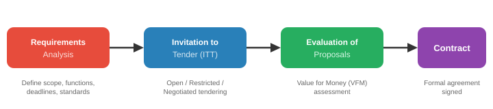
text
Requirements Analysis → Invitation to Tender (ITT) → Evaluation of Proposals → Contract Award
| Term | What it covers |
|---|---|
| Definitions | Precise meaning of words like ‘supplier’, ‘user’, ‘application’. |
| Form of agreement | Is it a sale, lease, or licence? Can licence be transferred? |
| Goods and services | Detailed specification of what is to be supplied. |
| Timetable of activities | Delivery milestones and dates. |
| Payment arrangements | Payments tied to completion of specific tasks/milestones. |
| Ownership of software | Can client sell to others? Does supplier retain copyright? Escrow – source code deposited with third party in case supplier fails. |
| Environment | Where equipment is installed, site preparation, electricity, etc. |
| Customer commitments | Access, information, staff time that the customer must provide. |
| Standards to be met | Quality standards, documentation standards, etc. |
| Acceptance criteria | How the customer will test and formally accept the deliverables. |
Ongoing management of the contract ensures both sides meet obligations. Key aspects:
People are an organisation’s most important asset. A manager’s activities around people include:
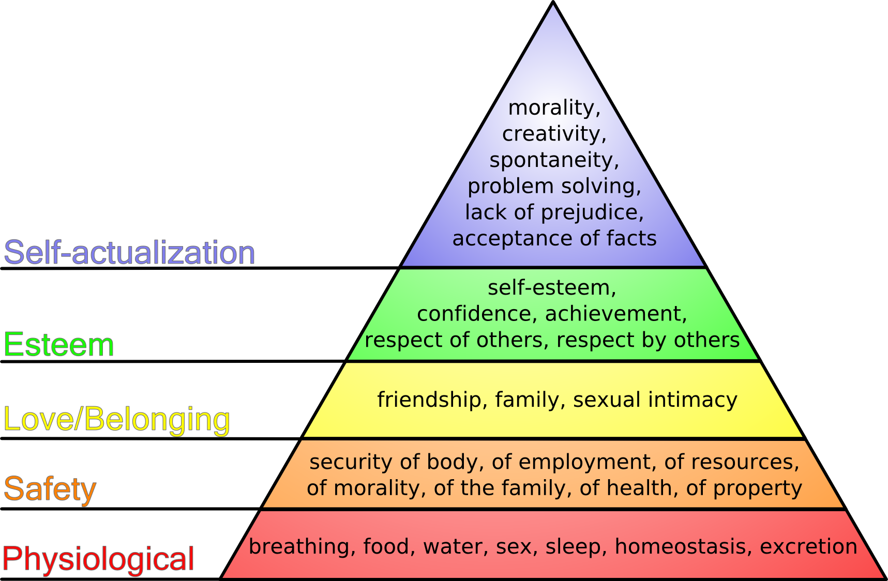
text
Self-
Realization
Esteem Needs
Social Needs
Safety Needs
Physiological Needs
B. Personality Types – Three orientations that affect motivation:
A balanced team needs a mix of all three. An all‑task team may lack collaboration; an all‑self team may have power struggles; an all‑interaction team may chat more than work.
Selection is based on:
Key Staff Selection Factors (simplified from the table):
| Factor | Importance |
|---|---|
| Application domain experience | Critical – developers must understand the business area. |
| Communication ability | Very important – must interact with team, managers, customers. |
| Adaptability / Attitude | Indicates ability to learn and positive approach. |
| Programming language/ Platform experience | Relevant mainly for short‑duration projects where there’s no time to learn. |
| Educational background | Shows fundamentals and learning ability; becomes less important with experience. |
| Personality | Must be compatible with team; no single type is “best”. |
This refers to ensuring that staff are trained in and follow the most effective work methods. In practice it means:
PCMM (5 levels) – a roadmap for improving people management:
A manager must actively motivate the team. Key motivators are linked to:
Practical ways to motivate:
Most software work is group‑based. Group effectiveness depends on:
A. Group Composition
B. Group Cohesiveness
C. Group Communications
D. Team Formation – Becoming a Team
Teams evolve through stages (Tuckman’s model – you can mention for context):
In a project environment, decisions are needed constantly – technical choices, priority calls, risk responses.
Decision‑making approaches:
Factors influencing choice: urgency, importance, team expertise, and impact on motivation. Involving the team in decisions that affect them improves commitment.
Leadership is based on respect, not just title. On a software project, two leadership roles often emerge:
| Role | Responsibility |
|---|---|
| Technical leader | Guides architecture, design, coding standards; earns respect through competence. |
| Managerial leader | Handles planning, resources, communication with stakeholders. |
A healthy organisation supports a career path for technical competence, so good engineers don’t have to become managers to advance.
Good leaders:
How project teams and authority are arranged.
A. Team Structures (from lecture notes)
B. Broader Organizational Structures (briefly added for completeness)
What is Testing?
Why Testing?
Objectives of Testing
Key Testing Principles (you should know these)
| Principle | Meaning |
|---|---|
| Traceability to requirements | Every test should be traceable back to a specific customer requirement. |
| Plan tests early | Test planning should begin long before testing execution starts. |
| Pareto principle | 80% of all errors are likely to be traceable to 20% of program components. Focus on those suspect components. |
| Start small, then integrate | Testing begins at the unit level and progresses outward towards the integrated system. |
| Exhaustive testing is impossible | It’s impossible to test every combination of inputs. Use risk and priorities to select test cases. |
A test plan is a document detailing a systematic approach to testing a system. It documents the strategy to verify that a product meets its design specifications and requirements. Usually prepared by or with significant input from Test Engineers.
A test plan includes:
A test case is a set of conditions/variables under which a tester determines whether the system works correctly. A test oracle is the mechanism to decide pass/fail.
A. Types of Testing (by execution method)
| Type | Description |
|---|---|
| Manual Testing | Tester executes test cases manually without automation tools, acting as an end user to identify unexpected behaviour. |
| Automation Testing | Tester writes scripts and uses software tools to re-run test scenarios quickly and repeatedly. |
B. Testing Methods (by knowledge of internals)
| Method | Description | Example |
|---|---|---|
| Black‑box | Testing without any knowledge of internal workings. Focus on inputs and outputs. | User enters a value, checks the calculated output, but doesn't know the formula inside. |
| White‑box (glass/clear) | Testing with full knowledge of internal logic and code structure. | Tester checks specific loops, conditions, and paths in the source code. |
| Grey‑box | Testing with limited knowledge of internal workings. | Tester knows some database schema but not full code. |
C. Levels of Testing
Two main categories: Functional and Non‑Functional.
Functional Testing: based on specifications; tested by providing inputs and examining outputs.
Non‑Functional Testing: tests attributes like performance, security, usability, portability.
A strategy integrates low‑level tests (verifying small code segments) and high‑level tests (validating major system functions against customer requirements).
Strategic Approach:
A good strategy provides guidance for practitioners and milestones for managers, with progress that is measurable even under deadline pressure.
Definitions:
V&V Process:
V&V Goals:
V&V encompasses many SQA activities (formal technical reviews, quality and configuration audits, performance monitoring, simulation, feasibility study, documentation review, algorithm analysis, development testing, qualification testing, installation testing, etc.).
Defining Software Quality (based on lecture quotes):
SEI (Software Engineering Institute) at Carnegie Mellon developed CMM to improve software development processes.
CMM Structure:
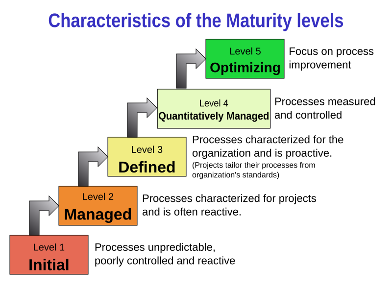
Software Quality Assurance (SQA) is the process of evaluating product quality and enforcing adherence to standards and procedures. It encompasses the entire development process (requirements, design, coding, code reviews, change management, configuration management, testing, release management, product integration).
Key SQA Activities (list):
SQA is organized into goals, commitments, abilities, activities, measurements, and verifications.
The QA organizational structure must provide the QA manager with direct organizational paths into every department.
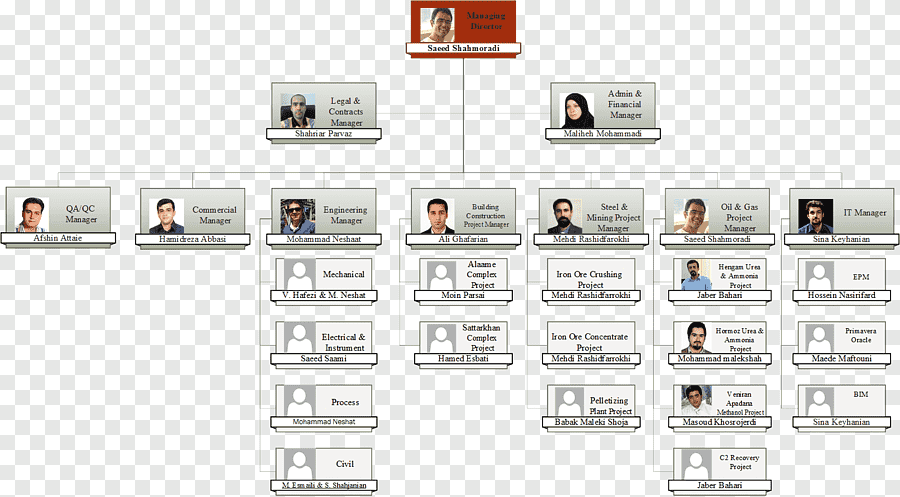
text
Executive
|
┌─────────────┼─────────────┐
| | |
Dept. Mgr QA Manager Dept. Mgr
(staff) (authority) (staff)
| | |
Employees ←── QA reporting ──→ Employees
QA manager has a direct line into each department for quality matters, independent of regular departmental hierarchy.
The SQA plan describes how quality assurance will be performed throughout the project. It includes:
| Section | Contents |
|---|---|
| Management | Place of SQA in the organization structure |
| Documentation | Each work product produced as part of the software process |
| Standards, practices, conventions | All applicable standards/practices and metrics to be collected |
| Reviews and audits | Overview of how reviews and audits will be conducted |
| Problem reporting and corrective action | Procedures for reporting, tracking, and resolving errors/defects; organizational responsibilities |
| Test | References test plan/procedure and defines test record keeping requirements |
| Other | Tools, SQA methods, change control, record keeping, training, risk managemen |
What is Software Configuration Management?
SCM is the discipline of identifying, organizing, and controlling changes to software products throughout the project lifecycle. It ensures that everyone works with the correct versions of all project artifacts and that changes are managed systematically.
Think of SCM as the "librarian" of the project — it knows where everything is, who changed what, when, and why.
Key Goal: Maintain the integrity and traceability of the software product as it evolves.
What is a Configuration?
The complete set of software products (code, documents, test data, manuals, etc.) at a specific point in time, along with their relationships.
Why is SCM essential in a software project?
| Problem SCM Solves | Explanation |
|---|---|
| Multiple developers changing the same code | Without control, changes overwrite each other, causing lost work and bugs. |
| Inability to revert to a stable version | If a change breaks the system, you must be able to go back to the last working state. |
| Confusion over which version is "current" | Stakeholders need to know exactly which build is being tested, delivered, or deployed. |
| Uncontrolled changes (scope creep) | Changes made without authorization or impact analysis can derail the project. |
| Parallel development (branching) | Different versions (e.g., maintenance release vs. new feature development) must be managed simultaneously. |
| Audit and accountability | You need to know who made what change and why, for reviews and compliance. |
Without SCM, a project can quickly descend into chaos — duplicate effort, lost code, broken builds, and angry customers.
A. Configuration Item (CI)
A CI is any work product that is placed under configuration control. Examples:
B. Baseline
A baseline is a formally reviewed and agreed-upon set of CIs that serves as a fixed reference point for further development. Once baselined, changes can only be made through a formal change control process.
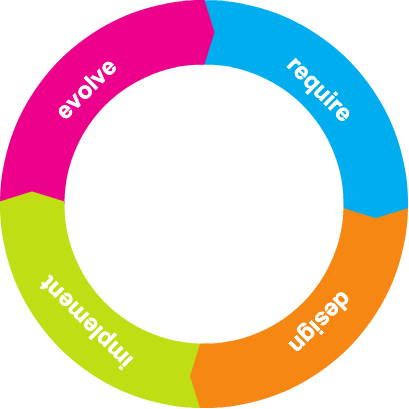
text
Requirements ── Baseline 1 ── Design ── Baseline 2 ── Coding ── Baseline 3 ── Testing ── Baseline 4 (Release)
C. Version vs. Revision vs. Release
D. Repository (or Library)
A central database that stores all CIs and their change history. Developers "check out" items, modify them, and "check in" the updated versions. Tools: Git, SVN, etc.
E. Branching and Merging
SCM involves four main activities that form a continuous cycle:
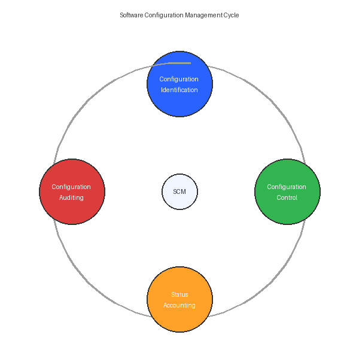
1. Configuration Identification
2. Configuration Control (Change Control)
3. Configuration Status Accounting
4. Configuration Auditing